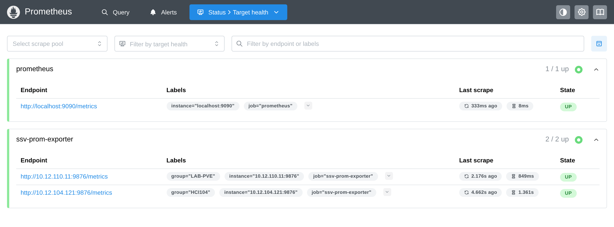
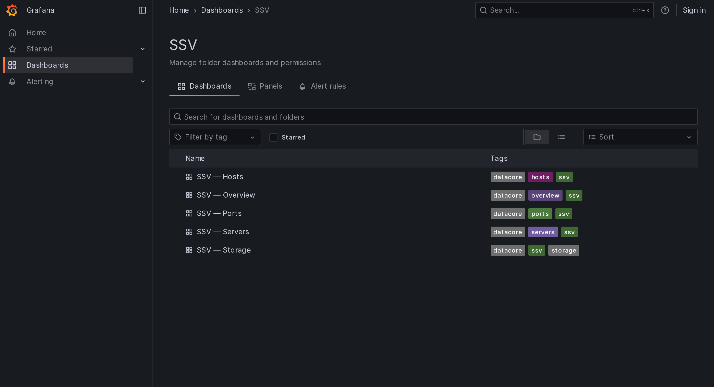
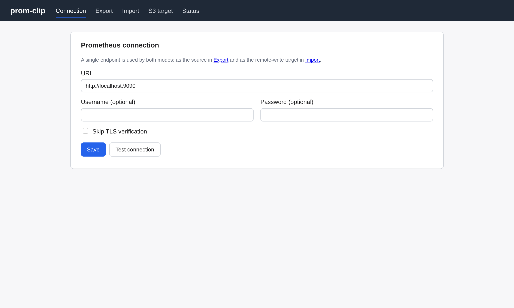
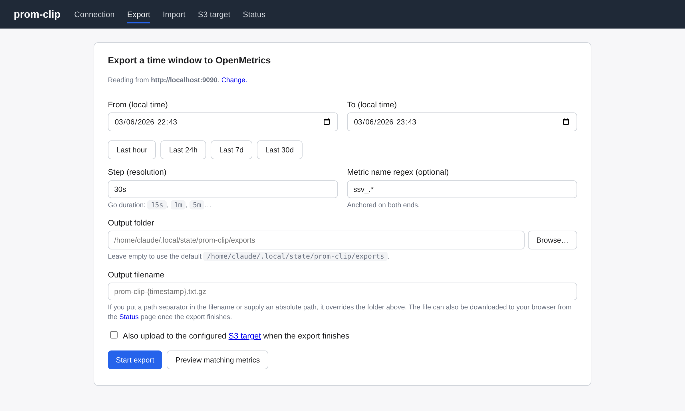
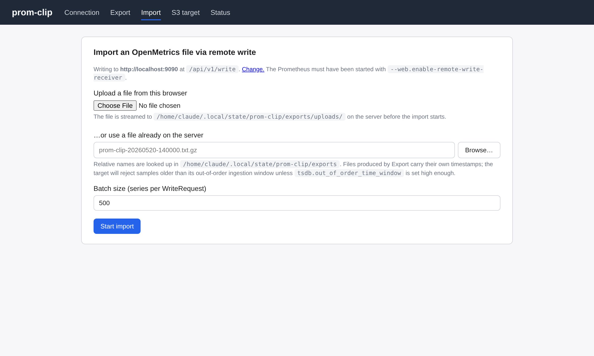
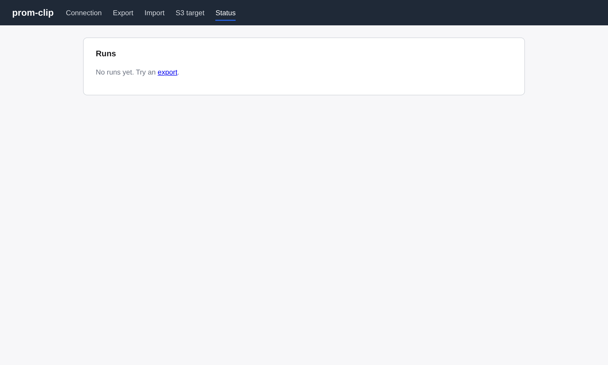

ssv-prom-exporter — Docker Compose guide
A Prometheus exporter for DataCore SANsymphony (SSV) that scrapes the
SSV REST API and exposes inventory, health and performance metrics on /metrics.
This guide is Docker-Compose-first: the fastest path to a working SANsymphony monitoring
stack — Prometheus, Grafana, five ready-made dashboards, and optionally the exporter itself and
the prom-clip companion — is the bundled deploy/ compose project.
The exporter runs anywhere with TCP/443 reachability to a SSV management server — it does not have to run on the SSV host itself. All screenshots in this guide were captured live against a DataCore PSP 20 lab through this exact compose stack.
The compose stack at a glance
Everything lives under deploy/. The stack is built around three optional
services selected by compose profiles, so you only run what you need:
| Service | Profile | Host port | Role |
|---|---|---|---|
prometheus | always | 9090 | Scrapes the exporter(s); 15 d retention. |
grafana | always | 3000 | Five SSV dashboards, anonymous Viewer on. |
exporter | full | internal | Runs ssv-prom-exporter itself against one SSV group. |
prom-clip | clip | 127.0.0.1:8088 | Clip a Prometheus time window and replay it elsewhere. |
Profiles compose freely — --profile full --profile clip brings up all four. With no
profile flag you get just Prometheus + Grafana, which is Scenario A.
deploy/docker-compose.yml
┌──────────────────────────────────────────────────────────────┐
│ prometheus:9090 ─────────► grafana:3000 (5 dashboards) │
│ ▲ scrape │
│ │ │
│ ┌───┴─────────────┐ ┌──────────────────┐ │
│ │ exporter:9876 │ │ prom-clip:8088 │ │
│ │ (--profile full)│ │ (--profile clip) │ │
│ └───┬─────────────┘ └──────────────────┘ │
└──────┼─────────────────────────────────────────────────────────┘
│ REST / 443
▼
SANsymphony management server(s)Requirements
- A Docker host with Compose v2 (
docker compose, not the legacydocker-compose). - DataCore SANsymphony PSP 20+ (older may work, untested).
- TCP/443 reachability from wherever the exporter runs to the SSV management server.
- Outbound network from the Docker host to your exporter targets (Scenario A) or to the SSV REST API (Scenario B).
Quick start
You already run one or more exporters and just want Prometheus + Grafana:
# clone and enter the compose project
git clone https://github.com/lblanc/ssv-prom-exporter.git
cd ssv-prom-exporter/deploy
cp .env.example .env
# point EXPORTER_TARGETS at your exporter(s), e.g.
# EXPORTER_TARGETS=lab=10.12.110.11:9876,prod=10.0.0.5:9876
$EDITOR .env
docker compose up -dGrafana → http://localhost:3000 (anonymous read-only, no login).
Prometheus → http://localhost:9090.
You don't run an exporter yet and want the stack to host it too:
cd ssv-prom-exporter/deploy
cp .env.example .env
# set SSV_URL / SSV_USER / SSV_PASS / SSV_GROUP in .env
$EDITOR .env
docker compose --profile full up -d --buildThe next three sections expand each scenario with full .env and command examples.
Scenario A — monitor exporters that already run elsewhere
default profile
The exporter runs on each SAN host (as a Windows service / systemd unit / standalone container); the compose stack only adds Prometheus + Grafana and scrapes those exporters over the network. This is the normal production topology.
1. Configure deploy/.env
# One entry per SANsymphony group: "groupname=host:port,...".
# groupname becomes the Prometheus `group` label the dashboards filter on.
EXPORTER_TARGETS=LAB-PVE=10.12.110.11:9876,HCI104=10.12.104.121:9876
# Grafana admin password (anonymous Viewer is always on; this gates editing).
GF_ADMIN_PASSWORD=adminA single target is just as valid: EXPORTER_TARGETS=lab=10.12.110.11:9876.
2. Bring it up
cd deploy
docker compose up -d
docker compose ps3. Verify every target is scraped
curl -s http://localhost:9090/api/v1/targets \
| jq -r '.data.activeTargets[] | "\(.labels.group)\t\(.scrapeUrl)\t\(.health)"'Or open Prometheus → Status → Target health. Each exporter target carries its
group label and should read UP:

ssv-prom-exporter job shows
2/2 up, one target per SANsymphony group (group="LAB-PVE",
group="HCI104").4. Open Grafana
Browse to http://localhost:3000 → Dashboards → SSV. Five dashboards are
pre-provisioned; pick a group from the Group dropdown on any of them.

Scenario B — run everything in the stack
--profile full
For demos, PoCs, or sites that prefer to run everything containerized: the full
profile adds the exporter service to the stack, so you install nothing on the SAN host.
Prometheus auto-discovers it on the compose network (exporter:9876).
1. Configure deploy/.env
# --- exporter against one SSV group ---
SSV_URL=https://10.12.110.11 # SSV REST base URL (the mgmt server)
SSV_USER=administrator
SSV_PASS=ChangeMe!
SSV_GROUP=lab # becomes the Prometheus `group` label
# Optional failover knobs (see "HA & multi-group")
# SSV_BASES=10.12.110.12,10.12.110.13
# SSV_BACKUP_CIDRS=10.12.110.0/24
# Leave EXPORTER_TARGETS unset — Prometheus auto-targets exporter:9876.
GF_ADMIN_PASSWORD=admin2. Bring it up
--build builds the exporter image locally from the repo. Drop it to pull
ghcr.io/lblanc/ssv-prom-exporter:latest instead.
cd deploy
docker compose --profile full up -d --build3. Watch it come alive
docker compose logs -f exporter
docker compose exec exporter wget -qO- http://127.0.0.1:9876/metrics | grep '^ssv_up'
# ssv_up{collector="health"} 1
# ssv_up{collector="inventory"} 1
# ssv_up{collector="performance"} 1/metrics on the host. It is internal by default.
To curl it from the host while in --profile full, uncomment the ports:
block on the exporter service in deploy/docker-compose.yml
(- "9876:9876").Pin a released image instead of building
# in deploy/.env
EXPORTER_IMAGE=ghcr.io/lblanc/ssv-prom-exporter:v0.8.1docker compose --profile full up -d # no --build → pulls EXPORTER_IMAGEScenario C — add the prom-clip companion
--profile clip
prom-clip clips a time window out of one Prometheus and replays it into another
(gzipped OpenMetrics out, remote-write in). The clip profile runs its web UI alongside
the stack, bound on host loopback 127.0.0.1:8088 — no Windows Firewall prompt, no
external exposure.
cd deploy
docker compose --profile clip up -d --build
# UI: http://127.0.0.1:8088Combine with --profile full to run the exporter, Prometheus, Grafana and
prom-clip together:
docker compose --profile full --profile clip up -d --build
http://prometheus:9090;
for a Prometheus on the docker host use http://host.docker.internal:9090.To import a clip back into the stack's Prometheus, it must accept remote-write. That is
an opt-in, set in deploy/.env:
PROM_REMOTE_WRITE=1 # turns on --web.enable-remote-write-receiver
PROM_OOO_WINDOW=7d # out-of-order window; old samples land instead of being droppeddocker compose up -d # re-create prometheus with the receiver enabledPROM_OOO_WINDOW, any sample older than the ~2 h head
block is discarded while the write still returns 200 OK — the import looks
successful but lands nothing. See prom-clip in depth..env reference
All knobs read by deploy/docker-compose.yml. Copy deploy/.env.example
to deploy/.env and edit. Everything is optional except the per-scenario essentials.
| Variable | Profile | Default | Description |
|---|---|---|---|
EXPORTER_TARGETS | default | lab=host.docker.internal:9876 | Comma list name=host:port. Each name becomes the group label. |
SSV_URL | full | required | SSV REST base URL, e.g. https://10.0.0.1. |
SSV_USER | full | required | SSV username. |
SSV_PASS | full | required | SSV password. |
SSV_GROUP | full | full | Label applied to the in-stack exporter's metrics. |
SSV_BASES | full | empty | Cold-start backup IPs (comma list) seeded before the first scrape. |
SSV_BACKUP_CIDRS | full | primary's /24 | CIDR allowlist for discovered backups. 0.0.0.0/0 disables filtering. |
EXPORTER_IMAGE | full | ghcr.io/lblanc/ssv-prom-exporter:latest | Image to run when not using --build. |
GF_ADMIN_PASSWORD | always | admin | Grafana admin password (editing only; viewing is anonymous). |
PROM_REMOTE_WRITE | always | off | Set to 1 to accept inbound remote-write (backfill from prom-clip). |
PROM_OOO_WINDOW | always | 7d | Out-of-order storage window; required for backfill to land. |
PROM_CLIP_IMAGE | clip | ghcr.io/lblanc/prom-clip:latest | Image for the prom-clip service when not using --build. |
Exporter settings (env vars & flags)
Inside the stack (--profile full) the exporter is configured through the
SSV_* env vars above. Run standalone (docker run, systemd, Windows service) the same
settings are available as env vars and/or CLI flags, and can also come from a YAML config.
| Flag | Env var | Description |
|---|---|---|
-config | SSV_CONFIG | Path to a YAML config file (config.example.yaml has the full schema). |
-url | SSV_URL | SSV REST base URL. |
-user | SSV_USER | SSV username. |
-pass | SSV_PASS | SSV password. |
-host | SSV_HOST | ServerHost header; defaults to the host of -url. |
-insecure | — | Skip TLS verification (default true; SSV ships self-signed certs). |
-bases | SSV_BASES | Comma-separated backup IPs seeded before the first scrape. |
-backup-cidrs | SSV_BACKUP_CIDRS | CIDR allowlist for discovered backups. Default: primary's /24. |
-retries | — | Retries after every endpoint has failed transiently once (default 2). |
-retry-delay | — | Initial backoff (default 200ms); doubles, capped 2 s, ±50% jitter. |
-perf-workers | — | Concurrent /performance/{id} calls per scrape (default 8). |
-listen | — | Exporter HTTP listen address, e.g. :9876. |
-ping | — | Probe /serverGroups, print the response, exit. |
-install / -uninstall | — | Register / remove the Windows service and exit. |
-version | — | Print version and exit. |
Precedence when several sources set the same value:
explicit flag > env var (flag default) > YAML > built-in defaultUnknown YAML keys are rejected at load time, so a typo can't silently leave a setting at its default.
Command cheat-sheet
All commands run from deploy/.
# Bring up / tear down
docker compose up -d # Scenario A
docker compose --profile full up -d --build # Scenario B
docker compose --profile full --profile clip up -d --build # B + C
docker compose down # stop, keep data
docker compose down -v # stop AND wipe TSDB + Grafana
# Status & logs
docker compose ps
docker compose logs -f prometheus
docker compose logs -f exporter # only with --profile full
# Apply an .env change to one service
docker compose up -d --force-recreate prometheus
# Rebuild only the exporter image after a code change
docker compose --profile full build exporter
docker compose --profile full up -d exporter
# Reload Prometheus config without a restart (lifecycle API is enabled)
curl -X POST http://localhost:9090/-/reloadThe Grafana dashboards
Grafana is provisioned with a datasource and five dashboards in the SSV folder, all cross-linked through an "SSV" dropdown that preserves the time range and selected filters as you move between them. Every panel is filtered by a Group template variable, so several SANsymphony groups can sit side by side.
Overview
Global health: scrape status, active alerts (level / server / age), server states, capacity rollups, total IOPS & latency, top-N noisy vdisks, active monitors.

Servers
Per-server (repeated row): state, cache, IOPS & throughput, and IOPS & latency broken
down by IO pipeline class (front-end target / mirror target / back-end / pool / target). A
"Server versions" table reads product / OS / build from ssv_server_info.

Storage
Per-pool (status, capacity, IOPS, latency) with a collapsible Physical-disks subsection (table + per-disk IOPS / throughput / latency / queue), and per-vdisk (status, cache hit ratio, IOPS, throughput, latency).

Hosts
SAN-client inventory + per-host IOPS & bandwidth, peak IO size, provisioned capacity, plus a Connections subsection for the host's ports.

Ports
Per-port (table + IOPS + bandwidth + target IO latency + pending commands) with a collapsible Errors row (link-layer counters).

admin
with GF_ADMIN_PASSWORD to edit.Exposed metrics
Non-exhaustive — see /metrics for the live list.
Scrape framing
ssv_up{collector="inventory"|"health"|"performance"}— 1 if the last scrape of that tier succeeded.ssv_scrape_duration_seconds{collector="..."}— last scrape duration, per tier.
Inventory
ssv_server_group_*, ssv_server_* (with an info series carrying
host_name / product_name / product_version / product_build /
os_version), ssv_pool_*, ssv_virtual_disk_*, ssv_host_*,
ssv_port_*, and ssv_physical_disk_* plus a
ssv_physical_disk_pool{disk_id, pool_id, pool, tier} relation gauge (the
pool/tier labels are also stamped on every disk metric, so PromQL filters need no joins).
Health
ssv_monitor_state{...}, ssv_alerts_total,
ssv_alert_info{alert_id, machine, level, message, ...} (gauge=1 per alert),
ssv_alert_age_seconds{alert_id}.
Performance
Per object: read_bytes_total, write_bytes_total, read_ops_total,
write_ops_total, plus per-object extras (server cache hits/misses + cache size/free;
pool capacity / used / available / reserved / reclamation / oversubscribed; vdisk cache counters;
host provisioned + peak IO sizes; port per-direction split + link-layer error counters;
physical-disk queue + pending commands).
SSV exposes *Time counters in milliseconds; the exporter multiplies by
1e-3 so every latency metric is in seconds. The server tier is split by IO pipeline class:
# average IO latency per class
rate(ssv_server_class_io_time_seconds_total[$__rate_interval])
/
rate(ssv_server_class_io_operations_total[$__rate_interval])prom-clip in depth
prom-clip ships in this repo as a second binary. It clips a time window from one
Prometheus and replays it into another — to hand a dataset to support, seed a demo, or carry a
before/after comparison between sites that aren't network-connected. Wire format: gzipped
OpenMetrics (.txt.gz); replay uses the remote-write protocol.
Export
Pick a time window and a step, optionally filter metric names with a regex
(e.g. ^ssv_.*), and write a gzipped OpenMetrics file. Optionally push it to a
configured S3 target on completion.

ssv_.* metric filter and a 30 s step.Import
Stream a previously exported .txt.gz back and replay it into the target Prometheus
via remote-write.

Status
The last source/target connection and the recent run history.

One-shot CLI
The same binary runs headless, with no server, port or state directory:
prom-clip export -src http://prom-source:9090 \
-from -1h -to now -step 30s \
-metric '^ssv_.*' \
-out snapshot.txt.gz
prom-clip import -dst http://prom-target:9090 \
-in snapshot.txt.gz-from/-to accept RFC3339, a Go duration (-1h = "1 hour ago"),
or now. Pass -state-dir <path> to opt into persistent mode (last
connection remembered, exports kept, rotation via -keep-exports N).
--web.enable-remote-write-receiver and
storage.tsdb.out_of_order_time_window set wide enough to cover the imported window.
The bundled stack exposes both behind PROM_REMOTE_WRITE (see
Scenario C).Running the exporter without compose
The compose exporter service is convenient, but production deployments usually run
the exporter as a long-lived service on each SAN host.
Plain docker run
docker run --rm -p 9876:9876 \
-e SSV_URL=https://10.0.0.1 \
-e SSV_USER=administrator \
-e SSV_PASS='ChangeMe!' \
ghcr.io/lblanc/ssv-prom-exporter:latestMulti-arch images (linux/amd64 + linux/arm64) are published on every
release as vX.Y.Z, X.Y and latest. ~34 MB, nonroot uid
65532, tini for clean SIGTERM, HEALTHCHECK on /metrics.
Linux (systemd)
tar xzf ssv-prom-exporter-vX.Y.Z-linux-amd64.tar.gz
cd ssv-prom-exporter-vX.Y.Z-linux-amd64
./install-linux.sh
$EDITOR /etc/ssv-prom-exporter/config.yaml # set url / user / pass
systemctl enable --now ssv-prom-exporter
journalctl --unit ssv-prom-exporter -fThe unit runs as a DynamicUser with ProtectSystem=strict,
NoNewPrivileges, a SystemCallFilter and tight memory limits.
Windows (native service / MSI)
From an elevated prompt:
:: 1. Install the MSI
msiexec /i ssv-prom-exporter-X.Y.Z-x64.msi /qn
:: 2. Place config.yaml in ProgramData and tighten ACLs
copy "C:\Program Files\ssv-prom-exporter\config.example.yaml" ^
"C:\ProgramData\ssv-prom-exporter\config.yaml"
icacls "C:\ProgramData\ssv-prom-exporter\config.yaml" /inheritance:r ^
/grant:r SYSTEM:F Administrators:F
:: 3. Register and start. Only -config lands in the SCM ImagePath.
"C:\Program Files\ssv-prom-exporter\ssv-prom-exporter.exe" ^
-install -config "C:\ProgramData\ssv-prom-exporter\config.yaml"
sc start ssv-prom-exporterThe MSI does not register the service (so config paths and credentials never leak into
MSI properties); -install does, baking only the explicitly-set flags into the SCM
ImagePath. Service-mode logs go to Windows Logs → Application under the
service's Event Log source.
High availability & multi-group
Failover
The exporter falls over to a backup management server when the primary is unreachable:
- After each successful inventory scrape, every IP from
/servers[].IpAddressesis added to the backup list (filtered bySSV_BACKUP_CIDRS, default = the primary's/24). - On a transient failure (network error, timeout, HTTP 5xx) the next endpoint is tried. HTTP 4xx is not a failover trigger — it's a config bug.
- The last-known-good endpoint is sticky for 5 min, so during an outage only the first call pays the dial-timeout cost; after 5 min the next call retries the primary, detecting recovery.
- The
ServerHostheader is rewritten per endpoint (each backup uses its own IP); SSV rejects hostname-basedServerHostvalues with HTTP 400.
Seed the backup list before the first scrape with SSV_BASES=ip1,ip2,....
Multi-group
SSV management servers federate their state: /serverGroups returns the local group
plus every linked peer, and /servers mixes local nodes with remote ones, but
/performance/{id} is local-only. The exporter therefore scrapes per-server inventory
and performance only for the local group (OurGroup=true). Run one exporter
per SSV group, and list them all in EXPORTER_TARGETS:
EXPORTER_TARGETS=HCI104=10.12.104.121:9876,HCI130=10.12.130.121:9876Each becomes a Prometheus target carrying its group=<name> label, and the
dashboards filter on $group end-to-end.
Troubleshooting & gotchas
| Symptom | Cause / fix |
|---|---|
ssv_up=0 on all collectors, fast-fail | Bad credentials, wrong ServerHost, or a stale session token. Check docker compose logs exporter. |
HTTP 400 / ErrorCode 9 | The mandatory ServerHost header is missing or set to a hostname. It must be the IP being hit — hostnames are rejected even when they resolve. |
| Grafana panels empty for a group | The Group dropdown doesn't match a scraped target, or that exporter's performance tier is down. Check Prometheus targets. |
| prom-clip import "succeeds" but nothing lands | Target Prometheus has no out-of-order window — set PROM_REMOTE_WRITE=1 + PROM_OOO_WINDOW. |
| Data looks stale | SSV's REST cache is 30 s by default (RequestExpirationTime in the mgmt server's Web.config); scraping faster sees stale data. |
Releases
Releases are produced by GitHub Actions on an annotated v* tag. Each release ships
the Windows .exe, the MSI, a Linux tarball, SHA256SUMS, and multi-arch
GHCR images for both ssv-prom-exporter and prom-clip. The latest published
release is v0.8.1; see the project's
GitHub Releases for the full list
and the CHANGELOG.md for per-version notes.
DataCore SANsymphony Prometheus Exporter — Docker Compose guide · screenshots captured live against a PSP 20 lab. MIT-licensed.